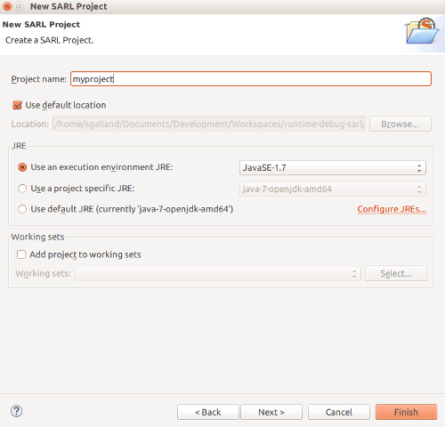
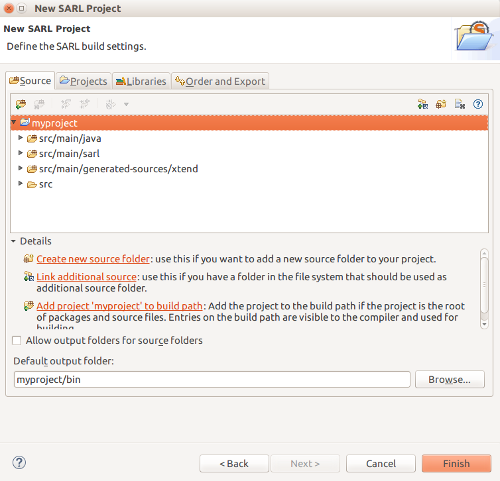

For developing with SARL, you should create a project. This document describes two ways for created SARL projects in Eclipse.
1. Create a SARL Project
For creating a project, you should open your Eclipse and click on File > New > Projects, and select SARL Project in the SARL category.

After clicking on Next, the wizard is displaying the first page for creating a SARL project.
1.1. Step 1: Entering the project information
You must enter the name of your project. You could change the standard SARL and Java environment configurations as well.

Then you could click on Next for continuing the edition of the project's properties, or simply click on the Finish button for creating the project with the default properties.
The rest of this section is devoted to the edition of the additional properties for the SARL project.
1.2. Step 2: Configuration of the source folders
The second page of the wizard contains the building settings. Two tabs are really interesting: the Source and the Libraries.
The Source tab defines the folders in your project that must contains source code files. By default, a SARL project is composed of four source folders:
-
src/main/java: for your Java classes; -
src/main/sarl: for your SARL scripts; -
src/main/generated-sources/xtend: for the Java codes generated by the SARL compiler (you should not change them yourself); -
src/main/resources: for the files that are not SARL nor Java code.
The default output folder is target/classes.
Note The names of these folders are following the conventions of a Maven-based project (described below). In this way, you will be able to turn the Maven nature on your SARL project on/off.

2. Create a Project with the Maven and SARL Natures
For creating a project with both the Maven and SARL natures, you should open your Eclipse and click on File > New > Others > Maven > Maven Project.
Follow the steps of the project creation wizard, and finally click on the Finish button.
2.1. Edit the Maven configuration
Open the file pom.xml, and edit it for obtaining a content similar to the configuration below.
Replace the version number 0.1.0-SNAPSHOT of SARL with the one you want to use. You could search on the Maven Central Repository for the last available version. The file VERSION.txt provides the latest version numbers of the SARL artifacts, as well.
<project>
...
<properties>
...
<sarl.version>0.1.0-SNAPSHOT</sarl.version>
</properties>
...
<build>
<plugins>
...
<plugin>
<groupId>io.sarl.maven</groupId>
<artifactId>sarl-maven-plugin</artifactId>
<version>${sarl.version}</version>
<extensions>true</extensions>
<configuration>
<source>1.7</source>
<target>1.7</target>
<encoding>UTF-8</encoding>
</configuration>
</plugin>
</plugins>
</build>
...
<dependencies>
...
<dependency>
<groupId>io.sarl.maven</groupId>
<artifactId>io.sarl.maven.sdk</artifactId>
<version>${sarl.version}</version>
</dependency>
...
</dependencies>
...
<repositories>
...
<!-- The following repositories are needed until the
SARL is released on the Maven Central -->
<repository>
<id>sarl-repository</id>
<url>http://maven.sarl.io</url>
<snapshots>
<enabled>true</enabled>
</snapshots>
<releases>
<enabled>true</enabled>
</releases>
</repository>
</repositories>
<pluginRepositories>
...
<!-- The following repositories are needed until the
SARL is released on the Maven Central -->
<pluginRepository>
<id>sarl-repository</id>
<url>http://maven.sarl.io</url>
<snapshots>
<enabled>true</enabled>
</snapshots>
<releases>
<enabled>true</enabled>
</releases>
</pluginRepository>
</pluginRepositories>
...
</project>
The Maven configuration is based on the use of sarl-maven-plugin. This plugin is in charge of compiling the SARL and the Java files.
extensions tag to true for the sarl-maven-plugin plugin. If you missed to set it, the plugin will not able to be integrated in the Maven life-cycle. The consequence will be that only the Java compiler will be invoked.
2.2. Configuration a runtime environment [optional]
For executing your SARL program, you must select a runtime environment.
The runtime environment that is recommended by the developers of SARL is Janus.
If you want to embed the runtime environment inside the Jar files of your SARL application, it is recommended to put it in the Maven dependencies.
Note You could remove the dependencies to the SARL artifacts in the previous Maven configuration. Indeed, the Janus platform depends already on. You will obtain the SARL artifacts by transitivity.
Replace the version number (2.0.1.0-SNAPSHOT) of the Janus platform with the one you want to use. You could search on the Maven Central Repository for the last available version. The file VERSION.txt provides the latest version numbers of the Janus artifacts, as well.
<project>
...
<properties>
...
<janus.version>2.0.1.0-SNAPSHOT</janus.version>
</properties>
...
<dependencies>
...
<dependency>
<groupId>io.janusproject</groupId>
<artifactId>io.janusproject.kernel</artifactId>
<version>${janus.version}</version>
</dependency>
<dependency>
<groupId>io.sarl.maven</groupId>
<artifactId>io.sarl.maven.sdk</artifactId>
<version>${sarl.version}</version>
<exclusions>
<exclusion>
<groupId>com.google.guava</groupId>
<artifactId>guava</artifactId>
</exclusion>
</exclusions>
</dependency>
...
</dependencies>
...
<repositories>
...
<!-- The following repositories are needed until the
Janus is released on the Maven Central -->
<repository>
<id>janus-repository</id>
<url>http://maven.janusproject.io</url>
<snapshots>
<enabled>true</enabled>
</snapshots>
<releases>
<enabled>true</enabled>
</releases>
</repository>
</repositories>
...
</project>
io.sarl.maven.sdk and io.janusproject.kernel in your POM file, you must be sure that the imported version of the Google Guava library is the one provided by the Janus platform. For ensuring this, you must exclude the Guava library from the transitive dependencies of io.sarl.maven.sdk
3. What's next?
In the next section, we will learn how to create our first agent.
SARL Documentation is generated by Jnario